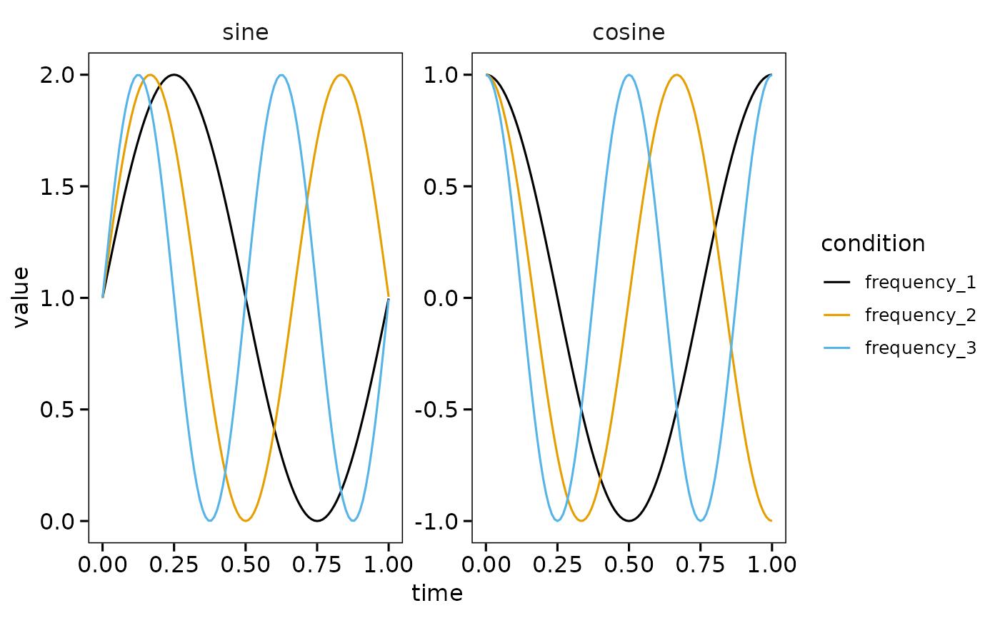
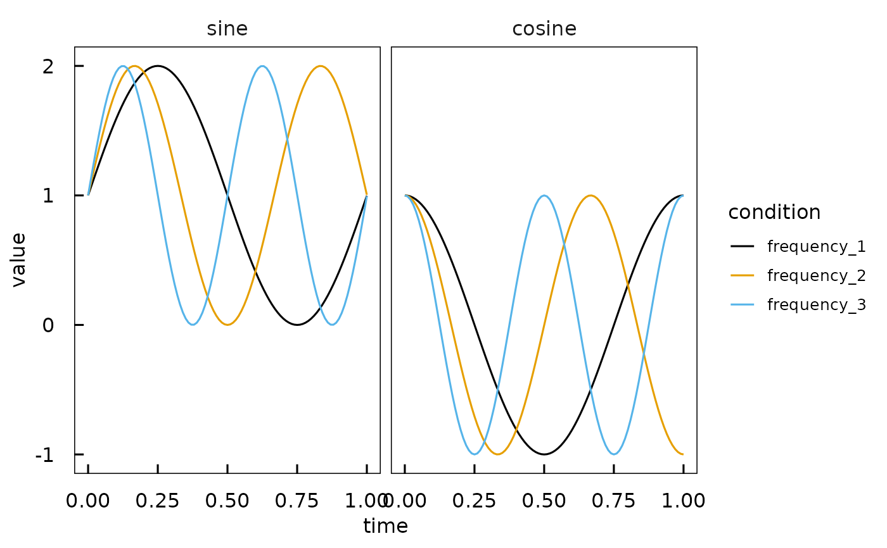
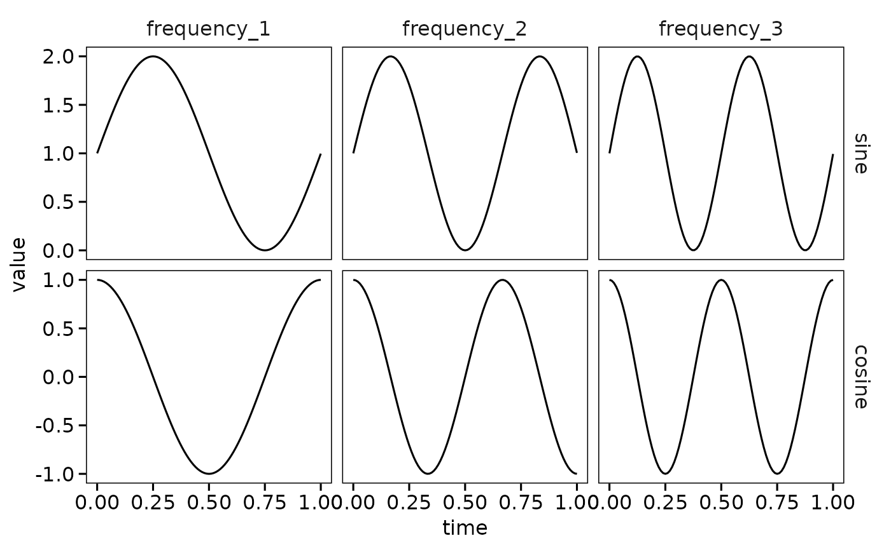
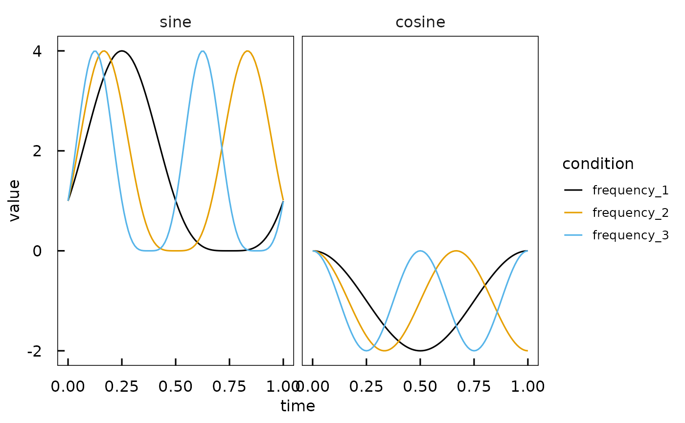
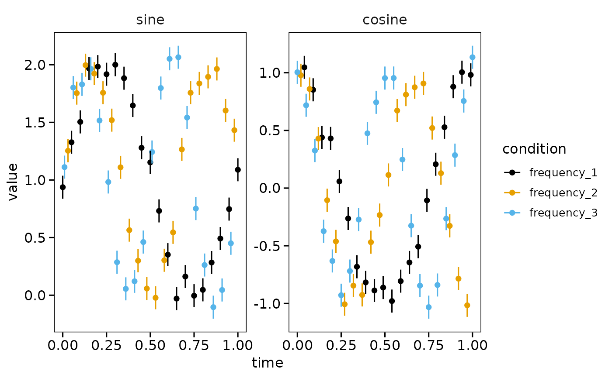
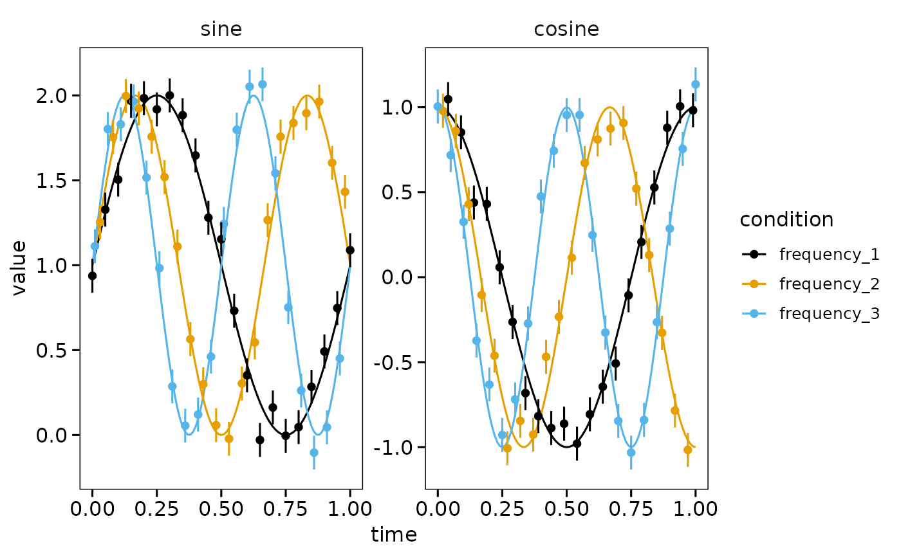
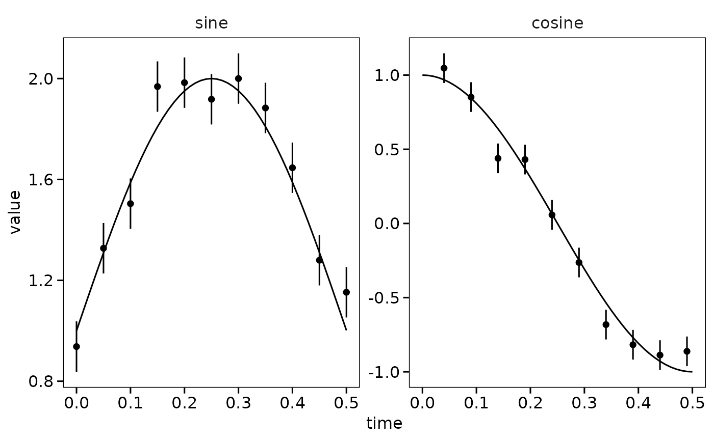
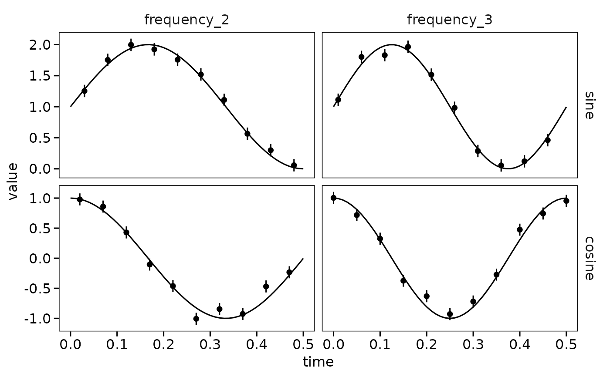
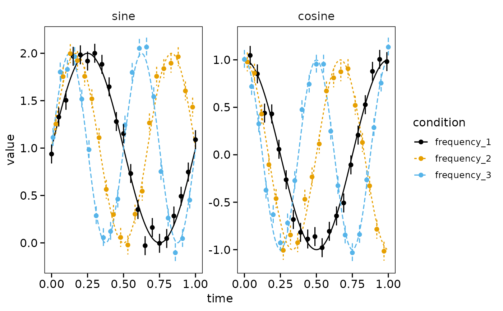

Plot a List of Model Predictions
Usage
plotPrediction(prediction, ...)
# S3 method for class 'prdlist'
plotPrediction(
prediction,
...,
errfn = NULL,
scales = "free",
facet = c("wrap", "grid"),
transform = NULL
)Arguments
- prediction
A prdlist, the output of a prediction function such as those generated by
Xs().- ...
Logical expressions to subset the plotted data.
- errfn
object of class
obsfn, an error model. DefaultNULL. If given, the predictedsigmais drawn as a band around the prediction.- scales
The
scalesargument ofggplot2::facet_wrap()orggplot2::facet_grid():"free"(default),"fixed","free_x"or"free_y".- facet
"wrap"(default) or"grid".- transform
Named list of transformations of the states, see
coordTransform().
Examples
# \donttest{
## Observation function and one parameter transformation per condition
fn <- eqnvec(
sine = "1 + sin(6.28*omega*time)",
cosine = "cos(6.28*omega*time)"
)
g <- Y(fn, parameters = "omega", outdir = tempdir())
#> Overwriting: /tmp/Rtmp2N4Zxw/obsfn.cpp
x <- Xt()
trafo <- lapply(1:3, function(i) eqnvec(omega = paste0("omega_", i)))
names(trafo) <- paste0("frequency_", 1:3)
p <- P(trafo, outdir = tempdir())
compile(g, p, output = "plotting_example")
#> Warning: A shared library named 'plotting_example' is already loaded; overwriting it is not portable. Using 'plotting_example_3' instead.
#> using C++ compiler: g++ [-O2 -DNDEBUG -w -fPIC]
#> reusing 4 unchanged object(s)
## Evaluate prediction
times <- seq(0, 1, .01)
pars <- structure(seq(1, 2, length.out = 3), names = getParameters(p))
prediction <- (g*x*p)(times, pars)
## Plot prediction
plotPrediction(prediction)

plotPrediction(prediction, scales = "fixed")

plotPrediction(prediction, facet = "grid")

plotPrediction(prediction, scales = "fixed",
transform = list(sine = "x^2", cosine = "x - 1"))

## Simulate data
set.seed(1)
dataset <- as.data.frame(prediction)
dataset <- dataset[seq(1, nrow(dataset), 5), ]
dataset$value <- dataset$value + rnorm(nrow(dataset), 0, .1)
dataset$sigma <- 0.1
data <- as.datalist(dataset, splitBy = "condition")
## Plot data, and data with prediction
plotData(data)

plotCombined(prediction, data)

plotCombined(prediction, data, time <= 0.5 & condition == "frequency_1")

plotCombined(prediction, data, time <= 0.5 & condition != "frequency_1",
facet = "grid")

plotCombined(prediction, data, aesthetics = list(linetype = "condition"))

# }